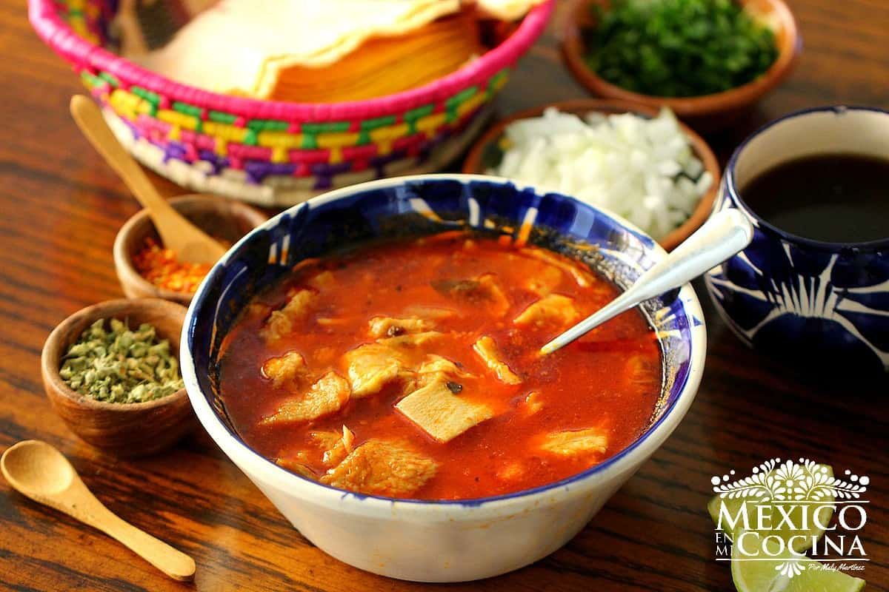

Menudo Casero.

El menudo es un platillo clásico de la comida mexicana que le ha dado la vuelta al mundo. Además de contar con una gran historia es realmente delicioso y fácil de preparar. Sigue nuestra receta y sorprende a tu familia con un platillo tradicional.
Durante la revolución mexicana se comenzaron a utilizar diferentes partes de la res, debido a que la comida para los soldados era escasa, por lo que se buscó aprovechar más la comida que se tenía, fue así como nació el menudo, también conocido como pancita.
Ingredientes
- 500g de maíz pozolero
- Agua
- 2 dientes de ajo
- 150g de cebolla
- 6 hojas de laurel
- 300g de codillo de costilla
- 150g de cebolla
- Pimienta
- 1 cucharadita de ajo en polvo
- 200g de pancita de res
- Lechuga picada
- Rábanos en rodajas
Perparación
- Coloca el maíz pozolero en una olla a fuego medio.
- Agrega agua, 2 diente de ajo, cebolla y las hojas de laurel.
- Deja cocinar.
- Aparte en otra olla pon a cocer el codillo de costilla con 2 dientes de ajo, cebolla y pimienta.
- Mientras se cocina todo, licúa los chiles, con 150 g de cebolla, pimienta, el ajo en polvo y agua.
- Agrega el codillo de costilla en la olla con el maíz.
- Añade la pancita de res y la salsa que licuaste.
- Mezcla bien y deja cocer por unos minutos.
- Sirve con lechuga y rábanos.
 Luis Isaac Miranda Morales | 12 de Faebro del 2020
Luis Isaac Miranda Morales | 12 de Faebro del 2020